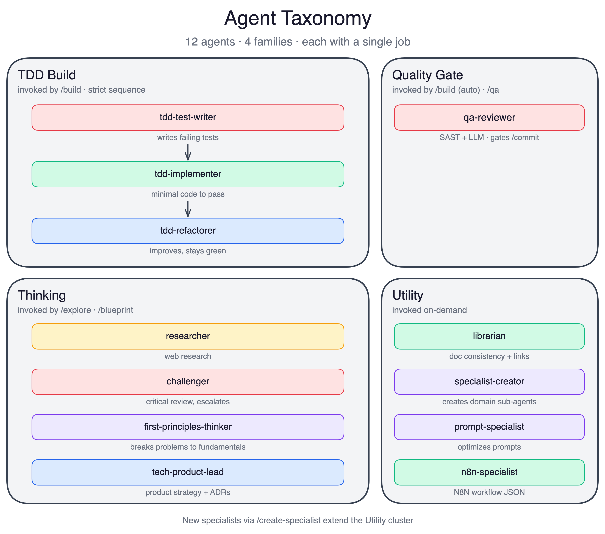

AGENTS AS SPECIALISTS

TDD Build (3 agents)
Run the RED-GREEN-REFACTOR cycle. Each in an isolated 200k-token context.
Quality Gate (1 agent)
qa-reviewer: SAST plus OWASP review with fresh context every time. No bias from the build session.
Thinking (4 agents)
researcher, challenger, first-principles-thinker, product-engineering-lead. Research and critique before code is written.
Utility (4 agents)
specialist-creator, prompt-specialist, librarian, n8n-specialist. Extend the harness, maintain docs, build integrations.